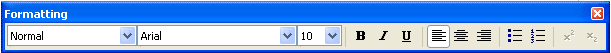
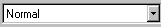
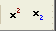

Formatting Toolbar |

The Formatting toolbar contains scrolling lists and buttons to specify font characteristics in equations and text.
To learn what a button does, hover the cursor over the button until a tooltip shows the title and a description appears on the message line of the Status Bar.

If your cursor is in a math region, this window specifies the math style of the highlighted characters or region.
If your cursor is in a text region, this window specifies the text style of the highlighted characters or region.
To change the math or text style, scroll and click on your choice.
This scrolling list shows the font for the text or math selection of your cursor. To select a new font, scroll and click on your selection.
This scrolling list shows the type size of the text or math region of your cursor. To select a new type size, scroll and click on your selection.
These buttons change text selections to bold, italic, or underlined.
Click on these buttons to align all the lines in a paragraph against the left or right side of the region or to center all the lines within a paragraph. If you want to align all text in a region you must highlight the entire region.
You can apply bullets or numbers to paragraphs within a text region. For example, the two paragraphs below have bullets:
Line 1
Line 2

Use these buttons to add superscripts or subscripts to text regions or math regions. Note that the math subscript is an array subscript, not a literal subscript operator.
In a math region, pressing the superscript or subscript button a second time repeats the action. In a text region, pressing either button a second time returns the following characters to a normal position.
To customize the Formatting toolbar, right-click on it and choose Customize.